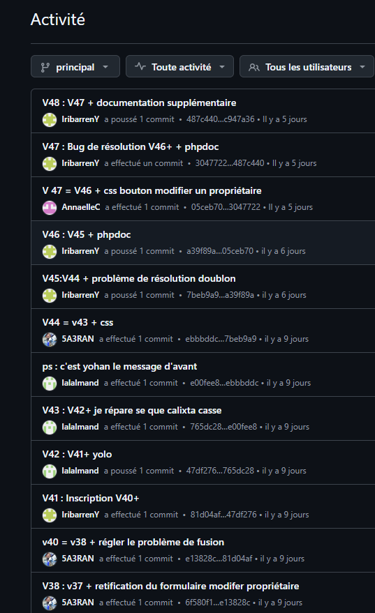
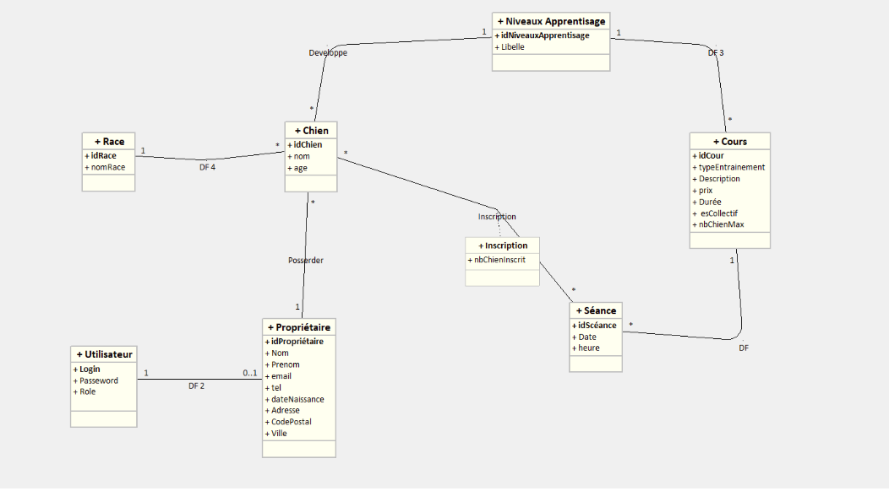

Outils & Technologies
Contexte
Le centre CanisPro Éducation, spécialisé dans l'accompagnement personnalisé (cours individuels, collectifs et agility), souhaitait effectuer sa transition numérique en remplaçant ses outils de gestion rudimentaires par une application web moderne.
En tant qu'équipe de développeurs juniors, notre mission consistait à maintenir et faire évoluer une application web développée sous le framework Symfony. Le projet vise à centraliser la gestion des chiens, des propriétaires et des inscriptions, tout en garantissant une sécurité stricte des accès via différents rôles.
L'intervention, prévue sur un volume de 24 heures, imposait une méthodologie rigoureuse : méthode agile, GANTT (ClickUp), branches GitHub dédiées, validation par fixtures et production de documentation.
Équipe du projet
Organisation du projet
Le projet a été piloté avec une méthode agile : tableau Kanban sur ClickUp, GANTT pour la répartition des tâches par membre, et versioning GitHub avec des commits réguliers et des branches par fonctionnalité.


Architecture technique — MVC Symfony
L'application repose sur l'architecture MVC Symfony :
les Modèles correspondent aux entités Doctrine (Utilisateur, Propriétaire, Chien, Race, NiveauxApprentissage, Cours, Séance, Inscription),
les Vues aux fichiers Twig (templates/),
et les Contrôleurs aux classes PHP dans src/Controller/.

src/ — Entity · Form · RepositoryController+DataFixtures.png)
.png)
.png)
.png)
Modèles de données
La base de données MySQL est gérée par Doctrine ORM. Les entités principales sont : Utilisateur, Propriétaire, Chien, Race, NiveauxApprentissage, Cours, Séance et Inscription.
.png)

Vues Visiteur
Un visiteur non connecté peut consulter l'accueil, le catalogue des cours (Socialisation, Obéissance, Agilité), les séances disponibles, les informations du centre et la page de contact. Il peut aussi s'inscrire ou se connecter.


Espace Membre
Un membre connecté accède à son espace personnel : consulter et modifier son profil propriétaire, gérer ses chiens (ajout, modification, voir les séances inscrites) et inscrire un chien à une séance.


Espace Administration
L'administrateur dispose d'un accès complet en CRUD sur toutes les entités : chiens, propriétaires, cours, séances et inscriptions.


Ma contribution
-
Planification GANTT — création et gestion du tableau de tâches ClickUp, répartition des responsabilités et suivi de l'avancement
-
Entité Doctrine
Cours— champstypeEntrainement,description,prix,esCollectif,nbChienMax,durée; relationOneToMany → Séance; relationManyToOne → NiveauxApprentissage -
Entité Doctrine
Séance— champsdate,heure; relationManyToOne → Cours; relationManyToMany ↔ Inscription -
CSS espace membre — correction et amélioration du bouton « Modifier un propriétaire »
Résultats & Apprentissages
Ce projet m'a permis de découvrir le framework Symfony et l'ORM Doctrine, en travaillant sur une architecture MVC complète avec gestion des rôles. La collaboration en équipe de 4, organisée via ClickUp et des branches GitHub dédiées, m'a appris à coordonner le développement et à gérer les conflits de fusion.
J'ai pris en charge la planification (GANTT), la création des entités Cours et Séance avec leurs relations ManyToMany et OneToMany, ainsi que des corrections CSS sur l'espace membre.